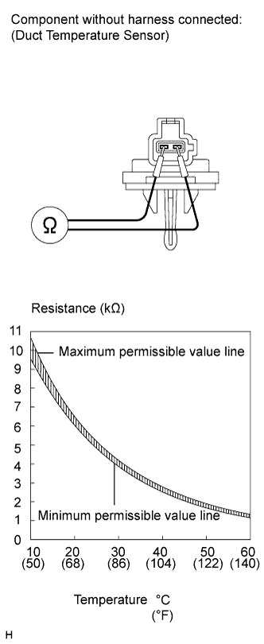

DUCT TEMPERATURE SENSOR (w/ Heater) > INSPECTION |
| 1. INSPECT DUCT TEMPERATURE SENSOR |
 |
Measure the resistance according to the value(s) in the table below.
| Tester Connection | Condition | Specified Condition |
| 1 - 2 | at 10°C (50°F) | 9.4 to 10.5 kΩ |
| 1 - 2 | at 15°C (59°F) | 7.5 to 8.3 kΩ |
| 1 - 2 | at 20°C (68°F) | 6.0 to 6.5 kΩ |
| 1 - 2 | at 25°C (77°F) | 4.8 to 5.2 kΩ |
| 1 - 2 | at 30°C (86°F) | 3.8 to 4.2 kΩ |
| 1 - 2 | at 35°C (95°F) | 3.1 to 3.4 kΩ |
| 1 - 2 | at 40°C (104°F) | 2.5 to 2.8 kΩ |
| 1 - 2 | at 45°C (113°F) | 2.0 to 2.3 kΩ |
| 1 - 2 | at 50°C (122°F) | 1.6 to 2.0 kΩ |
| 1 - 2 | at 55°C (131°F) | 1.3 to 1.6 kΩ |
| 1 - 2 | at 60°C (140°F) | 1.1 to 1.4 kΩ |